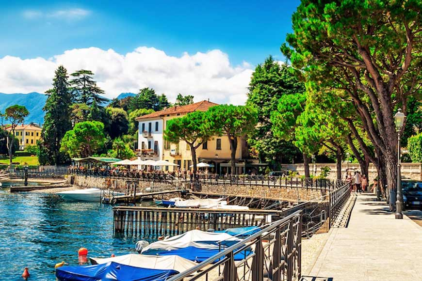

Plan Wycieczki
Zurych HB ➔ Como San Giovanni ➔ Lenno
Start (Zurich HB)
07:33
Przyjazd (Como S.G.)
10:08
🎫 Bilety i Transport
Wymagane dokumenty:
- 3x Saver Day Pass
- 1x Half Fare Travelcard
Pociąg - Info o Chiasso:
Odcinek Chiasso ➔ Como trzeba dokupić bilet odcinkowy. Saver Day Pass tego nie pokrywa
🗺️ Przebieg Dnia
07:33
Początek wycieczki:
Wyjazd pociągiem ze stacji Zurich HB w stronę Włoch.
10:08
Przyjazd na stację Como San Giovanni.
10:15 - 11:24
☕ Włoski poranek i przygotowania
Chwila relaksu w jednej z lokalnych kawiarni blisko dworca przed wyruszeniem w dalszą drogę. To idealny moment na spokojne uzupełnienie zapasów wody i prowiantu.
Czas na zasłużoną dawkę kofeiny! Solidny kubek czarnej kawy w towarzystwie świeżego cornetto z pewnością doskonale nastroi Was na resztę dnia !
11:24 - 12:11
🚌 Przejazd autobusem C110
- Start: Como - Stazione S.Giovanni
- Koniec: Lenno - Chiesa
- Czas przejazdu wynosi ok. 47 minut malowniczą trasą wzdłuż jeziora.
12:11 - 13:00
🚶♂️ Urokliwe Lenno i widoki na jezioro
Powolny spacer przez malownicze, spokojne włoskie miasteczko w kierunku zalesionego półwyspu. Przechadzając się nabrzeżem, będziecie mogli chłonąć wyjątkowy lokalny klimat i cieszyć się wspaniałymi, rozległymi widokami roztaczającymi się na błękitne wody jeziora Como oraz otaczające je góry.
{kind=link}

13:00 - 15:00
🏛️ Villa del Balbianello
Spędzenie 2 godzin na podziwianiu słynnych ogrodów. Czas na:
- Robienie wyjątkowych zdjęć.
- Podziwianie unikalnej przyrody i architektury.
- Relaks w jednym z najpiękniejszych miejsc nad jeziorem.
{kind=link}
{kind=link}
{kind=link}
{kind=link}
{kind=link}
{kind=link}
15:00 - 16:10
🚶♀️ Przygotowanie do drogi powrotnej
- Ostatnie chwile w Lenno i czas wolny.
- Spacer z Willi w stronę przystani promowej w Lenno.
16:10 - 17:40
🚤 Rejs statkiem przez malownicze jezioro Como
- 16:10 – Odpłynięcie z przystani w Lenno w stronę Como.
- Wspaniała okazja na relaks i podziwianie monumentalnych willi oraz górskich krajobrazów z pokładu promu. (Czas trwania: 1h 30min)
- 17:40 – Przyjazd na przystań w Como.
17:50 - 19:50
Czas wolny w Como i powrót:
- Czas wolny w mieście (2h).
- Zasłużona kolacja i relaksujące drinki 🍹 w jednej z lokalnych restauracji.
- 19:50 – Pociąg powrotny ze stacji Como San Giovanni do Zurychu.

22:27
Koniec wycieczki:
Przyjazd na stację Zurich HB i zakończenie podróży.